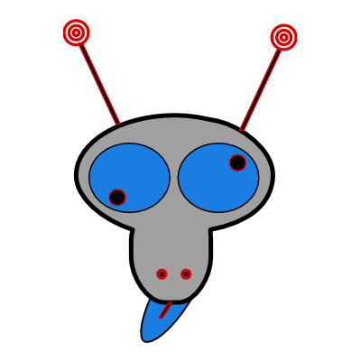
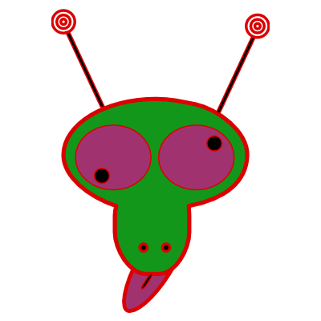
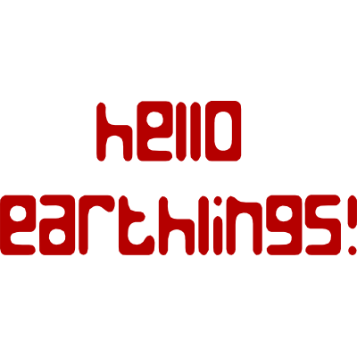

HOMe
AbOUt
ContaCT



GrEEtings frOM InXane!!!
HeLLo EArthLings!!! We are ALiens, eXIstents cURrently on
N0W_H3r3*
which relATive to EArth is far in your fUtUre. We resIDe on the sMAll planetOId of InXane a few LIghtseCs away frOM the HOrsehead NebUla WHere we mOLd WArp DRives for SPaceTime craFTs. We also geNErate and instaLL Time TuNNels - but far more soPHisticated than the 'Time Tunnel' you eartHLings deVEloped in your 70's Time.
The briMMing nEWs is we deVEloped a sYStem for SPaceTime InterCOommunicaTions. It is N0W possIBle to coMMunicate instantaNEously frOM or to eITher the paST or the fUtUre. This new teCHnology - The WIde WArp WEb - is WHat
enABles us to coMMunicate to you riGHt N0W frOM
N0W_H3r3*!
The WIde WArp WEb is the lateST in Time WArp teCHnology. It eFFiciently encODes
messaGEs into SUpersTRing paCKets and wraPPing these paCKets with wider freCQuency waRPs WHere they ever so briEFly weAVe with the N0 and W_H3r3 diMEnsions of SPaceTime for deLIvery. This enABles transmiSSions to bypaSS the phYSical lAYer and meSSages
tranSMit instAntaNEouslY to any Time speCTra. This is how you are recEIving this messAGe.
This is very new teCHnology and a few thiNGs still won't comPUte. For one, paCKets degRAde WHen
they traVErse certain dEEp SPace waRPs in arEAs of eXTreme gRaVity. Also paCKets still recEIve
inteRFerences from positROnic clOUds emiTTed by collAPsing worMHoles. But these proBLems shoULd find their soLUtions in the nEXt few kil0n0ws. In shOrt, WAtch this SPace!